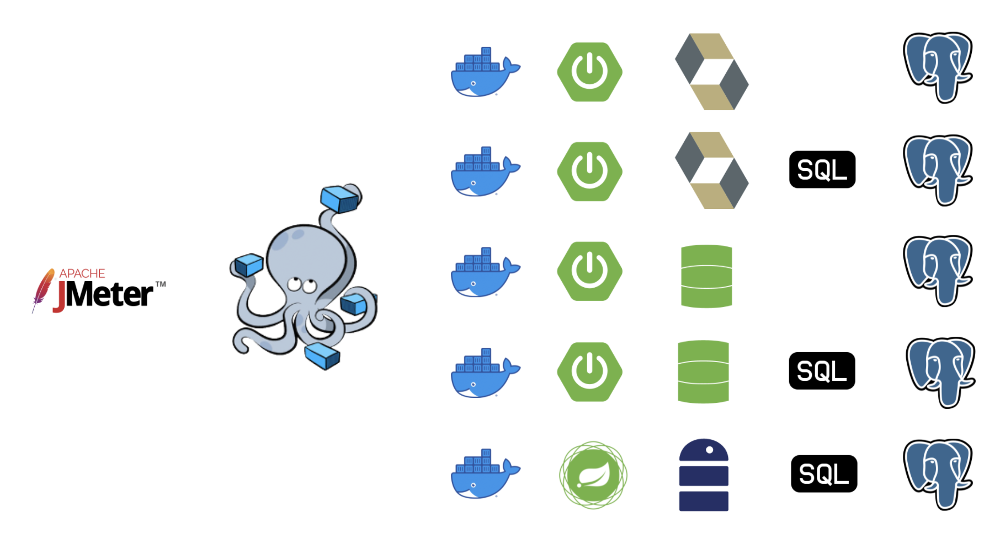

Crossing the chasm: Native Images
- Estefania Castro Vizoso
- Juan Antonio Breña Moral
Agenda
- Who I am
- Product life cycle
- Starting hypothesis
- Design of experiments
- How to compile native images with Spring?
- Benchmark results
- Key takeaways
- Sources
- References
Who I am
Estefania Castro Vizoso
- PENDING
Who I am
Juan Antonio Breña Moral
|
|
Technical Architect & Innovation Estratego @ VASS Associate Professor @ ICAI JVM Builder @ Eclipse Adoptium Twitter | Github | Linkedin |
|
Quote: "Pressure makes diamonds." - George S. Patton Jr. |
|
Product life cycle
It is the amount of time a product goes from being introduced into the market until it is taken off the shelves.

Crossing the chasm
In the book Crossing the Chasm, Geoffrey A. Moore begins with the diffusion of innovations theory from Everett Rogers, and argues there is a chasm between the early adopters of the product (the technology enthusiasts and visionaries) and the early majority (the pragmatists).
Crossing the chasm

Starting hypothesis
- Is Java HotSpot Virtual Machine at the end of the product life cycle?
- Microservices running as Native images from a GraalVM compilation have better performance than Microservices running on Java HotSpot Virtual Machine?
🤔
Starting hypothesis
Is Java HotSpot Virtual Machine at the end of the product life cycle?

Starting hypothesis
Is Java HotSpot Virtual Machine at the end of the product life cycle?
In 2021, exist so much interest in Java HotSpot Virtual Machine.
Starting hypothesis
Is Java HotSpot Virtual Machine at the end of the product life cycle?
- Corretto, Amazon
- GraalVM, Oracle
- Liberica, Bellsoft
- OpenJDK, AdoptOpenJDK
- OpenJDK
- SapMachine, SAP
- Zulu, Azul Systems
Starting hypothesis
Is Java HotSpot Virtual Machine at the end of the product life cycle?
Starting hypothesis
Is Java HotSpot Virtual Machine at the end of the product life cycle?
"I don´t know Rick, it seems false."
Starting hypothesis
Microservices running as Native images from a GraalVM compilation have better performance than Microservices running on Java HotSpot Virtual Machine?

Source: https://blogs.oracle.com/javamagazine/pedal-to-the-metal-high-performance-java-with-graalvm-native-image
Starting hypothesis
Microservices running as Native images from a GraalVM compilation have better performance than Microservices running on Java HotSpot Virtual Machine?
"How to verify that hypothesis?"
Design of experiments
Experiment: Develop a Microservice which connect with a Database (PostgreSQL) and the logic use ORM Features (In the cases that it is possible) and SQL (Native Query) but in a non trivial queries trying to test the performance of that dependencies.
Design of experiments
We implemented the experiment with:
- Spring Imperative JPA (Native)
- Spring Imperative JPA (ORM)
- Spring Imperative JDBC (Native)
- Spring Imperative JDBC (ORM)
- Spring Reactive
- Quarkus Imperative JPA (Native)
- Quarkus Imperative JPA (ORM)
- Quarkus Imperative JDBC
- Quarkus Reactive
Design of experiments
And... We added Node.js in the salad too...
😃 🥗
Because we can do it!
😎 💪
Design of experiments
That developments was implemented and included in a Docker compose running the microservices with Postgresql (One database container per microservice to avoid possible side effects)
Design of experiments
Design of experiments
Design of experiments
With the Docker compose running with the microservices connected with their databases, we running a JMeter script pointing for:
- Microservices running with JVM Hotspot
- Microservices running with Native images
We run the JMeter 10x to collect some reports to analyze later.
Design of experiments
Hardware used in the experiments:
PENDING
How to compile native images with Spring?
Is it easy or complex to create native images from your Spring Boot applications?
Quarkus was designed with that feature in mind.
How to compile native images with Spring?
1. We configure the Buildpack plugin for the native purpose

How to compile native images with Spring?
2.1 We added the plugin to compile Native images

How to compile native images with Spring?
2.2 Added a maven profile to compile Native images
How to compile native images with Spring?
Install GraalVM:
sdk use java 21.1.0.r11-grl
Gu install native-image
Generate the native image from Spring Boot:
mvn clean package -pl imperative-api -P native-image
How to compile native images with Spring?
After few minutes compiling...
How to compile native images with Spring?
./imperative-api/target/books-imperative-api

Startup time: 1.37 seconds.
How to compile native images with Spring?
mvn clean package spring-boot:run -pl imperative-api
Startup time: 2.63 seconds.
Benchmark results
Throughput results:
HTTP Request - Spring Imperative JDBC (Native) jvm 21.2766
HTTP Request - Spring Reactive jvm 18.53912
HTTP Request - Spring Imperative JDBC (Native) jvm 18.02127
HTTP Request - Spring Imperative JDBC (Native) jvm 17.96945
HTTP Request - Spring Imperative JDBC (Native) jvm 16.28664
HTTP Request - Spring Imperative JDBC (Native) jvm 15.37752
HTTP Request - Spring Reactive jvm 15.03986
HTTP Request - Spring Reactive jvm 14.9723
HTTP Request - Spring Imperative JDBC (Native) jvm 14.56876
HTTP Request - Nodejs native 13.95868
Benchmark results
Compare the best Throughput result between JVM Hotspot and Native image:
HTTP Request - Spring Imperative JDBC (Native) jvm 21.2766
HTTP Request - Spring Imperative JDBC (Native) native 13.40123
The Throughput from JVM Hotspot is about 63% than using Native Images generated by GraalVM CE.
Benchmark results
Maybe the graph should be upgraded because it is greather the performance with JVM Hotspot.
Benchmark results
Throughput results:

"Rick, show me your sources!"
Benchmark results
Start up times:
Key takeaways
- Java code runs with better Throughput on JVM Hotspot than GraalVM CE
- GraalVM CE is not ready to replace JVM Hotspot
- Leyden Project will improve the Startup time on JVM Hotspot
- Spring Boot & Quarkus has an easy configuration to compile in Native Image
Sources
The whole project, performance data are here:
https://github.com/EstefaniaExamples/crossing-the-chasm-native-images